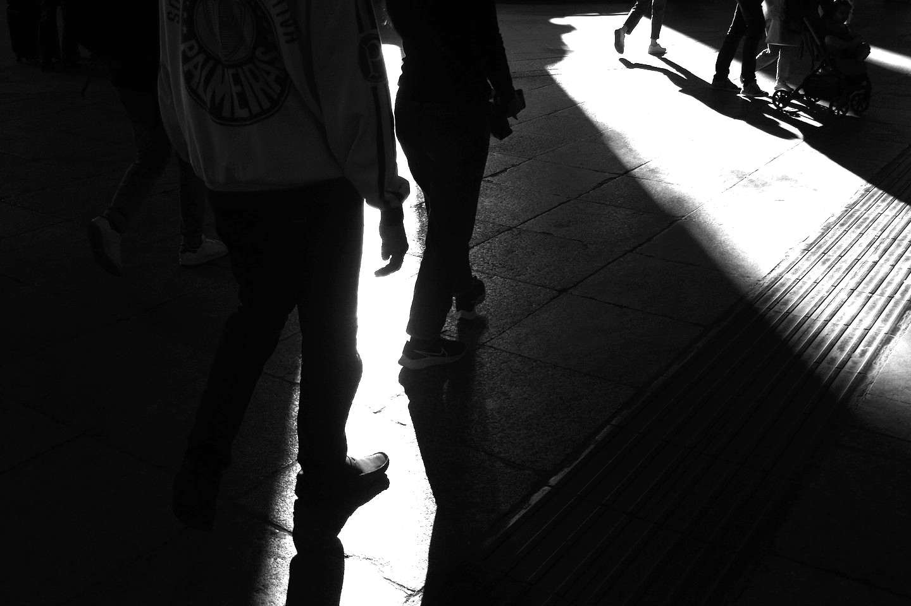

an aspiring web developer that is located on the fashion capital of italy.
let me show you what i can do with a few months of experience.
0
Years
0
Month
0
Days
what makes me a good fit for your company
"I would like to express my gratitude for taking the time to read my story. My name is Marc Josef Conanan and I am an aspiring web developer from Manila, Philippines, but raised in Milan, Italy.
I am a driven, passionate, and well-rounded person who enjoys challenging tasks and building meaningful relationships.
I understand that my limited experience in software development may raise concerns about my qualifications. However, I am a self-taught software developer and have been dedicating 7-8 hours a day to learning code without any compensation.
This self-discipline and determination demonstrate my strong potential to learn and contribute to your company.
I am confident that my drive, hard work, and passion will exceed your expectations if given the opportunity."
Tesla clone website
using the things a know and some tutorials i created this clone website with HTML vanilla Js and some CSS.
Spacex clone website
using the things a know and some tutorials i created this clone website with HTML vanilla Js and some CSS.
CV/resume
this is my professional resume.
certificates i received on the Udemy course.
HTML certification, CSS certification and JS certification.

A tribute to the city that raised me
"Milan has always been my home, even though I was not born here, I was raised and shaped by this city. Here, I discovered that every person and place in Milan has a story to tell,
from the ancient buildings to the new graffiti on the collone, and from the exchange students trying their first aperitivo to the locals reminiscing about the "good old days."
This city is truly remarkable and I wouldn't change a thing. Milan strikes the perfect balance of preserving its history and culture while embracing modernity. This city holds a special place in my heart.
Not only is it beautiful, but it also offers a wide range of opportunities,
from culinary to web development, which I believe would be harder to find in other major cities in Italy. To conclude this tribute to Milan, I'll use a phrase that is unique to this city: "top top adoro."